01 / NEW WORLDS
RIVERS, FALLS AND FORESTS.
Three new battlefields: Cascade Highlands, Riverwood Crossing and Emerald Basin. Wade the fords, fight beside waterfalls, and hold forest lanes across rolling hills.
THE SILENCE
ENDS WITH YOU.
Three civilizations. One impossible signal.
Build your army. Answer the frontier.
APPLE SILICON MAC · SINGLE PLAYER · PUBLIC PREVIEW 0.8
NOW AVAILABLE · VERSION 0.8
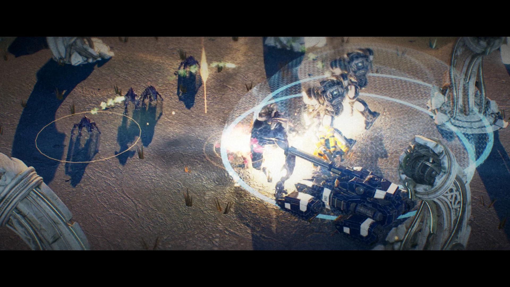
OFFICIAL TRAILER · 60 SECONDS
FACTION DOSSIERS
01 / NEW WORLDS
Three new battlefields: Cascade Highlands, Riverwood Crossing and Emerald Basin. Wade the fords, fight beside waterfalls, and hold forest lanes across rolling hills.
02 / LIVING BATTLES
In Watch Battle, reinforcements arrive by faction: orbital strikes, bursting Bloom and pillars of light. Wrecks burn, heroes land in slow motion, and each world has its own weather.
03 / FEEL
Walk and run cycles matched to real speed, leaning turns and braking, upper-body hit reactions, smooth vegetation and terrain, clear unit markers at full zoom-out, and a redesigned start screen.
TONY STUDIOS PRESENTS
60 seconds. Five battlefields.
Watch the 0.8 trailer, cut from in-engine footage. Explore more of the universe in the cinematic trailer, then see the armies in action through gameplay.
0.8 trailer · In-engine battle footage from NULLFRONT 0.7 development builds, edited with titles and an original score.
Tony Studios presents NULLFRONT: Frontier Wars. Watch the 60-second 0.8 trailer: in-engine battle footage from the 0.7 development builds across four battlefields, edited with titles and an original score. The cinematic and gameplay trailers are also available above.
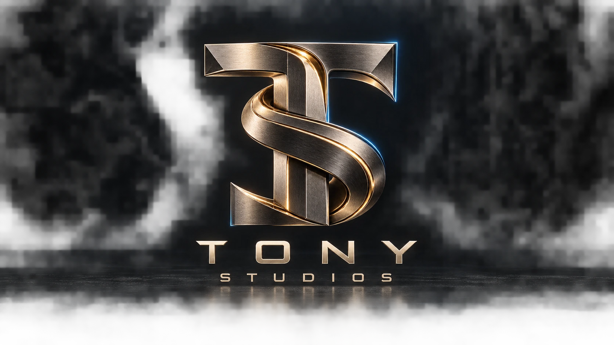
A frontier worth fighting for.
Command three rival civilizations in an original science-fiction RTS. Build a base, marshal infantry and war machines, and turn a contested relay into the advantage that wins the battle.
Follow Commander Ada Voss into The Quiet Meridian, or forge your own offensive in AI skirmishes. Every order is yours.
Explore the gameplaySteel. Instinct. Light.
Different worlds. Different ways to wage war.
01 / FACTION DOSSIER
Steel. Discipline. Firepower.
Human orbital industry goes to war. Riggers weld your expanding base while siege armor holds the frontline. Deploy Hammers for long-range fire and call down devastating Orbital Lances.
ON THE FRONTLINE
CHOOSE YOUR INSTRUMENT OF WAR
Siege armor. Living weapons. Hard light.
Explore the forces shaping the frontier.
CONCORD / AERIAL DIVISION
Armored gunship
The Concord’s armored VTOL brings heavy machinery into the sky. Examine the original game model in the interactive hangar below.
BATTLEFIELD IDENTITY
Steel & disciplineInspect in 3D ↗Generated cinematic interpretation. See the native roster for in-game appearance.
THE COMPLETE ARSENAL / 360°
Seven units. Three factions.
Every angle is yours.
Select a unit below to inspect its full 3D model. Drag to rotate, zoom into the armor, and switch between camera angles.
Skyhawk: original game model. Other units: new 3D showcase interpretations.
Command the real thingDRAG TO ROTATE · PINCH OR SCROLL TO ZOOM · CAMERA BUTTONS FOR KEYBOARD CONTROL
Eleven days after a colony falls silent,
its relay transmits a child’s voice.
CHAPTER 01 / ASHFALL
Voss has orders to destroy the signal. She chooses to answer it. Recover the silent relay—and survive whatever answers back.
Illustrated briefings. Battlefield dialogue. Changing objectives. Press F6 in game to begin.
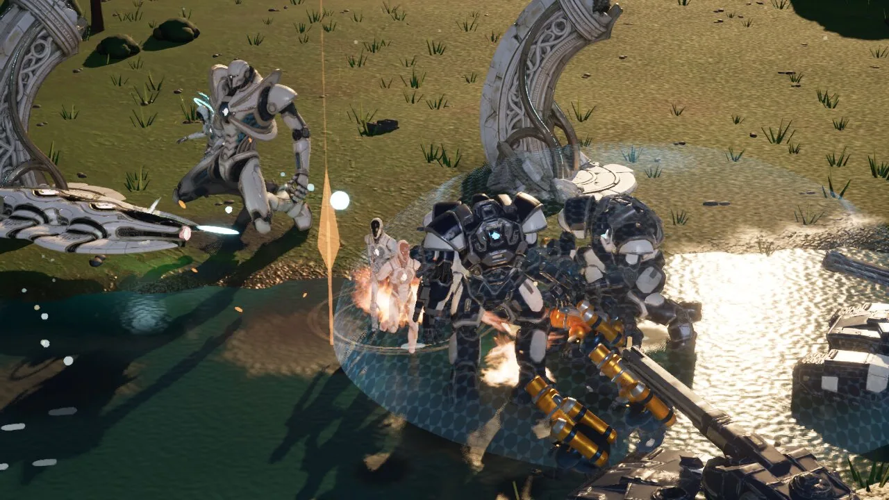
ACTUAL GAMEPLAY / CINEMATIC VIEWTHE FRONTLINE01 / ESTABLISH
Harvest Crystal and Flux. Expand your base, unlock technology, and keep reinforcements moving to the front.
02 / CONTROL
Capture the relay for bonus income in Rapid Deployment. Hold the center—or make the enemy pay for leaving it.
03 / STRIKE
Sidestep a charged beam. Close on deployed siege armor. Turn infantry, aircraft, and heavy weapons into a single offensive.
Jump into Rapid Deployment with an army ready to fight, or build from the ground up in Classic. Four AI difficulty levels.
From the first transmission
to the last shot on the battlefield.
11 media items
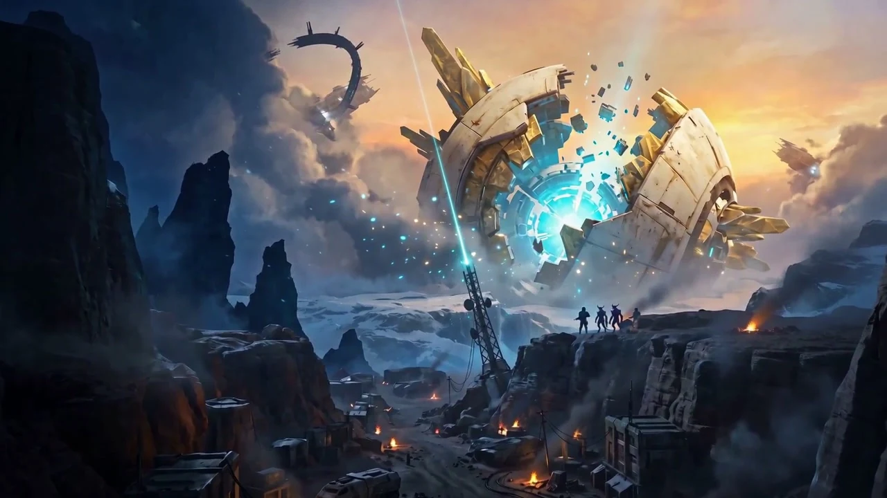
CINEMATIC / 00:12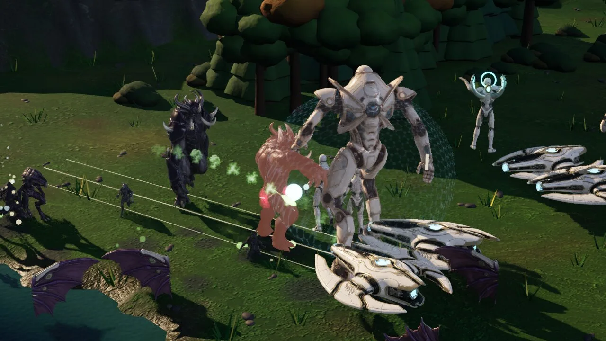
ACTUAL GAMEPLAY · 0.8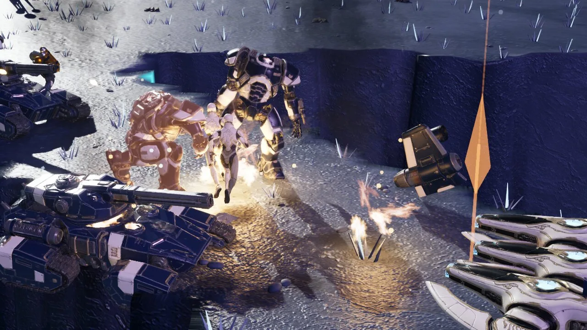
ACTUAL GAMEPLAY · 0.8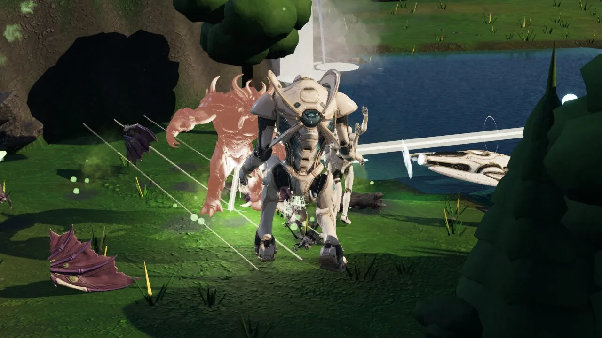
ACTUAL GAMEPLAY · 0.8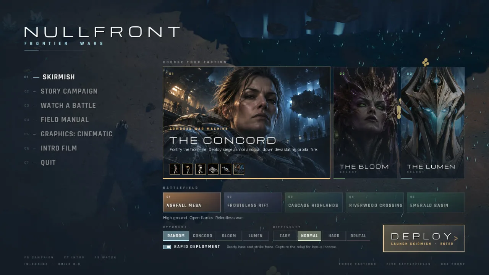
GAME INTERFACE · 0.8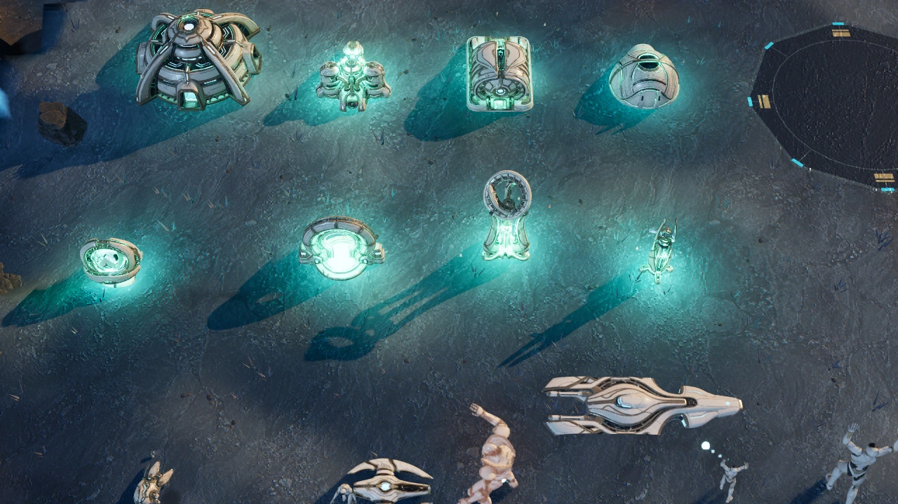
IN-ENGINE GALLERY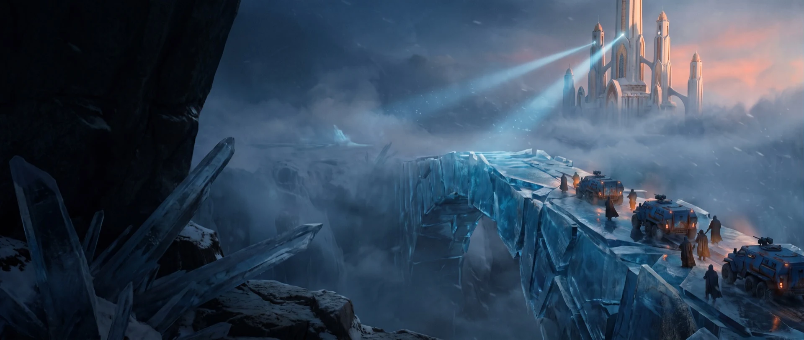
CAMPAIGN KEY ART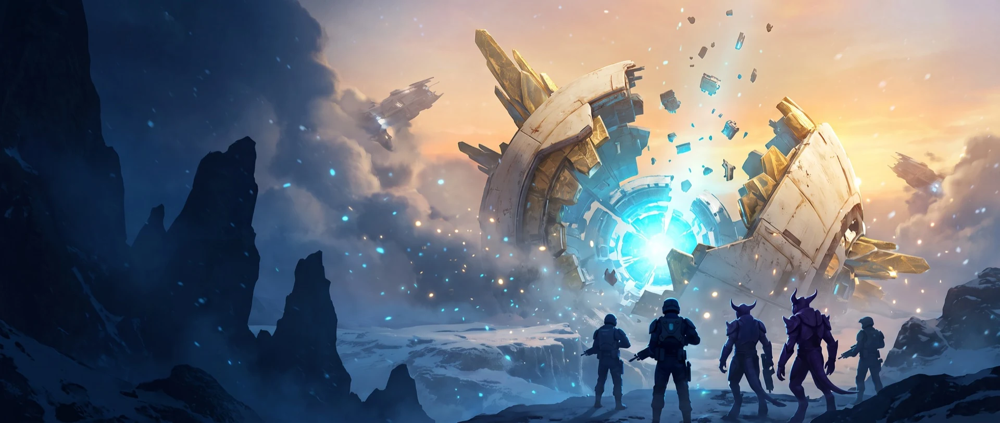
CAMPAIGN KEY ARTTHE ORIGINAL SOUNDTRACK
From the adaptive in-game score.
From the first transmission to the heart of the Meridian.
Explore fifteen new story and arsenal cinematics.
Generated narrative cinematics created with MiniMax H3 Max. These are not gameplay recordings.
YOUR NEXT COMMAND STARTS HERE
Three factions. One silent world. Your next move.
Download free for MacBEFORE YOU DEPLOY
Everything you need for your first landing.
If macOS cannot verify the developer: this preview is ad-hoc signed and not Apple-notarized. If you trust this release, try opening it once, then use System Settings → Privacy & Security → Open Anyway. Follow Apple’s official instructions.
For a “damaged” alert, verify the download and extract a fresh copy. Do not override a “will damage your computer” warning. Read the full installation and troubleshooting guide ↗
An Apple Silicon Mac running macOS 14 or later. The download is 920 MiB and the installed app is approximately 1.24 GiB. Allow at least 3 GB free for downloading, extracting, and installing. Check your chip and macOS version in Apple menu → About This Mac.
Balanced is the default graphics profile, with a 60 fps frame limit. Choose Performance, Low, or Cinematic in the Graphics menu. Actual frame rate depends on your Mac and battle size.
This release is a downloadable, single-player Mac game. It includes the four-chapter campaign and AI skirmishes. Browser play, online multiplayer, Windows, and Intel Mac builds are not included. After installation, no service account or internet connection is required to play.
Media labeled “Actual gameplay” shows battles in the running game. “In-engine gallery” shows native unit and building showcases. The story cinematic and campaign key art are generated narrative media, clearly labeled separately from gameplay.
SHA-256 for NULLFRONT-0.8.0-macOS-arm64.zip:
cdd931bf747332a1a2e99887e44771b88df7456ad5ae272e56320d939937887fDownload: 965,181,931 bytes. Application: 1,334,752,455 bytes.
Release notes and verification files ↗